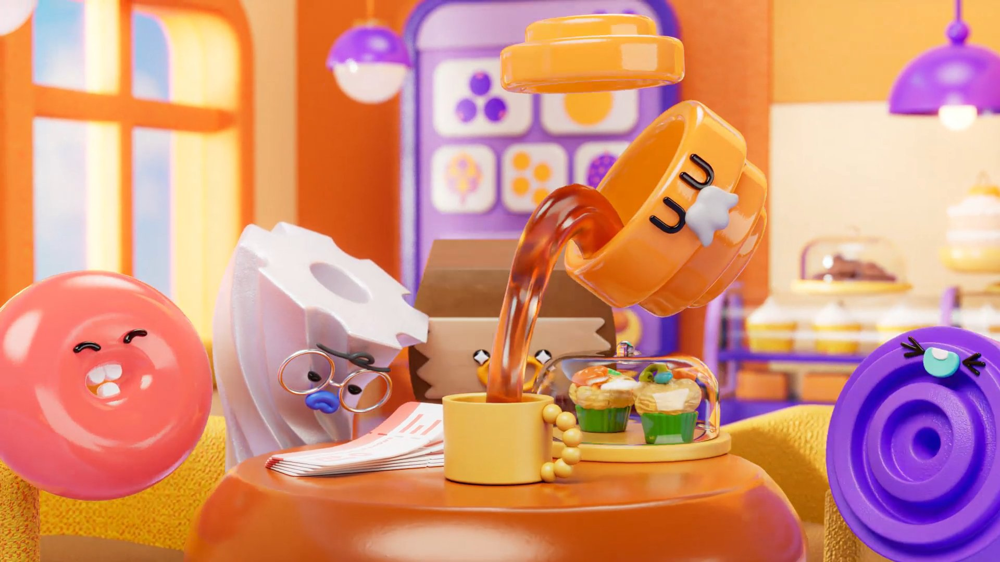

The Brief專案概念
以「精準食代・綠色智慧」為核心，把五大展區化為五位角色。
從廚房展開冒險，串起食材、加工、包裝到餐飲的產業鏈。
延續展區 Icon 特徵，以高彩度與圓潤造型，讓產業更親切。
This brand animation turns the five exhibitions of FOOD TAIPEI MEGA SHOWS into five characters.
Starting in a lively kitchen, their journey links the whole food industry chain.
Inspired by the exhibition icons, each character gets its own colours and motion.
CREDITS
- CLIENT
- 2026 台北國際食品展覽會 Food Taipei Mega Shows
- PRODUCTION
- 目子拾參創意 Muzixiii Studio
- DIRECTOR
- 李芹羽 Amber Lee、曹書睿 Ray Tsao
- PRODUCER
- 許文賢 Wenshan Xu
- STORYBOARD
- 蔡宜家 Ikea Tsai
- LEAD 3D ARTIST
- 蔡宜家 Ikea Tsai
- 3D ARTIST
- 蔡宜家 Ikea Tsai、佟紹魁 Shaokuei Tong、盧長禧 Bonnie Lu、廖浩辰 Haochen Liao
- COMPOSITING
- 蔡宜家 Ikea Tsai
- CHARACTER DESIGN
- 蔡宜家 Ikea Tsai
- RIGGING
- 蔡宜家 Ikea Tsai
- GENERATIVE AI DEVELOPMENT
- 杜沂芩 Evie Du
- MUSIC & SOUND DESIGN
- 三十而立 sincerely music
- MUSIC / SOUND EFX
- 陳品先 Stanley_C